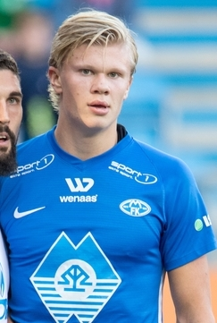
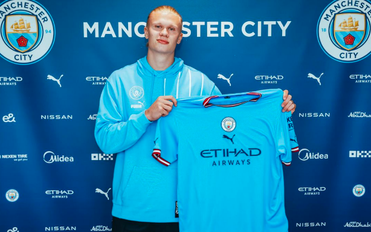

Home Page Erling Haaland page Email Manchester City
All Star Favourite Player
Erling Haaland Number #9
Erling Braut Haaland born 21 July 2000 in Leeds, West Yorkshire, England. In 2004, at the age of three, he moved to Bryne Norway. Erling’s father Alfie Haaland was a well-known professional footballer for Leeds United and later on Manchester City.
Erling started following his father’s footsteps and began his journey in the academy of his hometown club Bryne at the age of five. Just before leaving the club to join Molde Erling sucessfully landed his first hat trick at the of 16.
Recap Record: 1st Hat Trick :18 Goals
Molde
2017/2019
Molde debut Haaland's first appearance on April 26 2017. While at Molde Haaland played in the UEFA Competition and scored his first UEFA goal. By the end of his contract for Molde, Haaland had a record at the club of 16 goals. He also won the
"Eliteserien Breakthrough Of The Year Award"Haaland was with Molde for 2 years when Red Bull Salzburg made him an offer.
Recap Record: 16 Goals 
Red Bull Salzburg 2019/2020
Red Bull Salzburg signed Haaland in January 2019 on a five year contract. Haaland's first appearance was in February of that year. Haaland played in the Champions League for Red Bull Salzburg. He joined players like Christiano Ronaldo and Neymar for scoring in each of his first five Champions League matches. At the end of his contract for Red Bull Salzburg Haaland had a record of 5 hat tricks scored with the club. Although Haaland was contracted for five years he stayed for only one season 2019/20, which he was then taken by Borussia Dortmund.
Record Recap: 5 Hat Tricks :29 Goals
Borussia Dortmund
2020/2022
Haaland was the second player in Dortmund history to score a hat trick on his debut appearance in January 2020. In Haaland's first two matches for Dortmund he scored 5 goals making a new record for the club. Haaland played in the Bundesliga game scoring 7 goals in this competition. He also played in Champions League scoring his 10thgoal in Champions League. Haaland ended his time at Dortmund in 2022.
Record Recap: 2 Hat Tricks :62 Goals
Continued Success At Dortmund
Haaland won two "Bundesliga Player Of The Month Awards" and recieved the title of "Top Scorer" in Champions League on his 10th goal and was awarded the competitions "Best Forward". Later after this Haaland reached his 15th goal in the Champions League. Whilst in the Bundesliga competition Haaland's record was at 50 goals. Haaland then went on to sign for Manchester City.
Record Recap: 15 Champions League Goals
: 50 Bundesliga Goals
Manchester City & The Treble
2022/2023

In May 2022 Manchester City announced they had reached a deal to sign Haaland, the deal was formalised on June 13. Haaland was gining a five year contract and began his debut appearance for the club in July. Haaland showed his hat trick skills by scoring 2 hat tricks in August one month after his first appearance and won "Player Of The Month". Haaland played in the Champions League for the club bringing his record up to 25 goals. In 2023 Haaland had reached 39 goals in Champions League. By April 2023 Haaland's Champions League record reached 50 goals and once again was "Palyer Of The Month". In May Haaland won his first Premier League Title when Manchester City Won the 2022/23 Trophy. In this season Haaland won the Premier League "Golden Boot Award". Haaland made his second Champions League "Top Scorer" title, that same year joining Lionel Messi as the first players to win twice before turning 23 years of age. Haaland also won UEFA men's "Player Of The Year" in August of that year.
City Continued, 2023/24
Manchester City began 2023/2024 Premier League season in August 2023. Haaland with his team won the UEFA Super Cup and was named the PFA "Player's Player Of The Year". Back in the Premier League Haaland reached his 50thgoal. To finish the 2023 year Haaland was presented with the "Gerd Muller Trophy" at the Ballon D'or Awards ceremony. This award is giving to those who scored the most goals for their club and country in one season. Haaland suffered an injury and did not play again until February 2024. Haaland scored a goal that marked him as the only player in his team to have scored against every team in the league. In May Haaland recieved his second "Golden Boot" and once again held the Premier League title trophy for 2023/24.
2024/2025: 100 Goals For Manchester City & International Success
On the 22 of September Haaland matched Christiano Ronaldo's record for reaching 100 goals for one club in Europes Top Five Leagues. Haaland was then announced September's "Player Of The Month" for 2024. Along with that Haaland has racked up an incredible 42 goals in 41 Champions League appearances. On the International side of football, Erling Haaland is the leading goalscorer for the Norway national team with 33 goals.
Erling Haaland has now a market value of €200 million since October 2024.
Record Recap: 11 Hat Tricks : 100+ Goals
"What a night! You need a hattrick? Call me!"